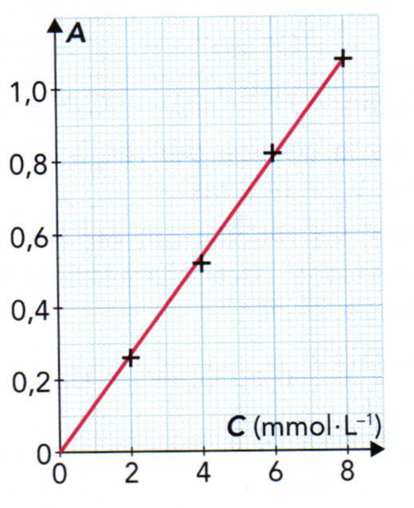

Utiliser la loi de Kohlrausch
La carence en élément calcium, ou hypocalcémie, peut être traitée par injection intraveineuse d’une solution de chlorure de calcium. On souhaite déterminer la concentration $C_o$ en chlorure de calcium contenue dans une ampoule de $\pu{10,0 mL}$. Le contenu de l’ampoule est dilué 100 fois. La mesure de la conductivité de la solution $S$ obtenue est os : $\sigma_S = \pu{1,23 mS.cm-1}$. On mesure également la conductivité de différentes solutions étalon en chlorure de calcium. Les résultats sont rassemblés dans le tableau ci-dessous :
| $C$ $(\pu{mmol.L-1})$ | 1,0 | 2,5 | 5,0 | 7,5 | 10,0 |
| $\sigma$ $(\pu{mS.cm-1})$ | 0,27 | 0,68 | 1,33 | 2,04 | 2,70 |
- Tracer la courbe $\sigma = f(C)$.
- Modéliser la courbe $\sigma = f(C)$.
- La loi de Kohlrausch est-elle vérifiée ?
- En déduire les concentrations $C_S$ et $C_0$.
Utiliser la loi de Beer-Lambert
On dispose d’une échelle de teinte en diiode dont les concentrations $C_i$ sont connues. Un spectrophotomètre, réglé sur la longueur d’onde $\lambda = \pu{450 nm}$, permet de mesurer l’absorbance $A$ des solutions de l’échelle de teinte. On peut alors tracer le graphe $A = f(C)$.
- Comment appelle-t-on le graphe $A = f(C)$ ?
- Comment doit-on choisir les concentrations des solutions étalons ?
- Comment doit-on choisir la longueur d’onde de travail ?
- La loi de Beer-Lambert est-elle vérifiée ?
- Sans modifier les réglages du spectrophotomètre, on mesure l’absorbance $A_S = \pu{0,64}$ d’une solution $S$ d’eau iodée. En déduire la concentration $C$, en diiode de la solution $S$.
Retrouver la loi de Kohlrausch
La conductivité d’une solution ionique est donnée par la relation : $$ \sigma = \sum_i \lambda_i\; [X_i] $$ où $\lambda_i$ est la conductivité ionique molaire de l’espèce chimique $X_i$, dont la concentration dans la solution est $[X_i]$.
On considère une solution de concentration $C$ en chlorure de magnésium apporté.
- Écrire l’équation de dissolution du chlorure de magnésium, $\ce{MgCl2 (s)}$, dans l’eau.
- Exprimer les concentrations ioniques $[\ce{Mg^{2+}}]$ et $[\ce{Cl^-}]$ dans la solution en fonction de la concentration $C$.
- Écrire l’expression de la conductivité de cette solution en fonction de la concentration $C$ et des conductivités ioniques molaires.
- Montrer que la loi de Kohlrausch est vérifiée.